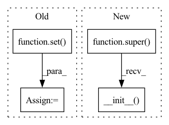

Pattern ID :498
Before Change
self._properties = dict()
self._properties["_training"] = True
self._properties["_parameters"] = set()
self._properties["_states"] = set()
self._properties["_modules"] = set()
self._properties["_parameter_subtrees"] = set()
self._properties["_state_subtrees"] = set()
self._properties["_module_subtrees"] = set()After Change
_training: bool = True
def __init__(self):
super().__init__()
self.__dict__["_name_to_kind"] = dict()
self.__dict__["_training"] = True
@propertyIn pattern: SUPERPATTERN
Frequency: 3
Non-data size: 4
Instances Fragment ID: 2740489
Project Name: ntt123/pax
Commit Name: cf57b202963207d8e289c812a05d59b9713271d6
Time: 2021-08-30
Author: 9960521+NTT123@users.noreply.github.com
File Name: pax/module.py
M Class Name: Module
N Class Name: Module
M Method Name: __init__(1)
N Method Name: __init__(1)
M Parent Class:
N Parent Class:
M File Name: pax/module.py
N File Name: pax/module.py
M Start Line: 25
M End Line: 32
N Start Line: 50
N End Line: 51
Before Change
def __init__(self, triples, true_triples, entities, relations):
self.len = len(triples)
self.true_triples = set( true_triples)
self.triples = triples
self.n_entity = len(entities.keys())
self.n_relation = len(relations.keys())
After Change
def __init__(self, triples, true_triples, entities, relations):
super().__init__(
triples=triples,
true_triples=true_triples,
entities=entities,
relations=relations,
mode="relation-batch"
)
def __getitem__(self, idx):
head, relation, tail = self.triples[idx]
Fragment ID: 2740490
Project Name: raphaelsty/mkb
Commit Name: 9ffad2c9934ed44284b29df072351a519ae9d2a3
Time: 2020-09-17
Author: raphael.sourty@gmail.com
File Name: kdmkb/datasets/base.py
M Class Name: TestDatasetRelation
N Class Name: TestDatasetRelation
M Method Name: __init__(5)
N Method Name: __init__(5)
M Parent Class: TestDataset
N Parent Class: Dataset
M File Name: kdmkb/datasets/base.py
N File Name: kdmkb/datasets/base.py
M Start Line: 163
M End Line: 167
N Start Line: 259
N End Line: 265
Before Change
:param vocabulary_size: the number of most frequent words to include in the documents. Infrequent words will be discarded from the list of preprocessed documents
self.documents = documents
self.stopwords = set( stop_words.words(stopwords_language))
self.vocabulary_size = vocabulary_size
def preprocess(self):
After Change
class SimplePreprocessing(WhiteSpacePreprocessing):
def __init__(self, documents, stopwords_language="english"):
super().__init__( documents, stopwords_language)
warnings.simplefilter("always", DeprecationWarning)
if self.__class__.__name__ == "CTM":
Fragment ID: 2740487
Project Name: milanlproc/contextualized-topic-models
Commit Name: 22cbf55252df0938e4a9e80f8c1673732776fec8
Time: 2020-11-21
Author: chiccobia@gmail.com
File Name: contextualized_topic_models/utils/preprocessing.py
M Class Name: SimplePreprocessing
N Class Name: SimplePreprocessing
M Method Name: __init__(3)
N Method Name: __init__(4)
M Parent Class: WhiteSpacePreprocessing
N Parent Class:
M File Name: contextualized_topic_models/utils/preprocessing.py
N File Name: contextualized_topic_models/utils/preprocessing.py
M Start Line: 10
M End Line: 19
N Start Line: 51
N End Line: 58